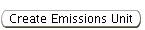
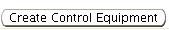
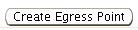
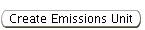
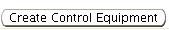
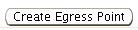

Previous Topic
Next Topic
| Common User Interface Elements |
Previous Topic |
Next Topic |
This Help topic describes the general layout and common features of pages in the system that provide Detail Data about an object or entity for which data is stored in the system. Most artifacts in the system, including Facilities, Applications, Requests for Permitting Action, Permits, Emissions Inventories, and Compliance Reports offer such pages. You can access Detail Data for an object by clicking on the identifier link, for example a Report ID, for an instance of that object in a datagrid, a tree or any other summary screen.
Detail Data screens have similar general layouts and some common features. Each includes entity-specific high-level data for a single instance of an object. Lower-level data be available for some objects through third-level menu links or nodes in a tree that may appear on the screen with the high-level data. The Page Layout & Menu Structure Help topic page describes and illustrates the common third-level menu element and illustrates the position of the content area with respect to that menu, the tree control and other common screen elements.
Each Detail Data page also provides you the opportunity, with Operations Buttons, to enter and/or modify data shown on the page, and to perform other context-specific operations. For objects that include tree representations, you may also access a Detail Data page (and its associated operations buttons) by selecting a node in the tree for the object of interest. (See the Tree Control section below for more information on that usage.) Some Detail Data pages also provide the capability for you to view, add or delete Attachments related to an object, either directly on the Detail Page, or via a third-level menu item. These capabilities are covered in separate Help topics, accessible via the preceding links or those listed in Related Help Topics.
Figure 1 below presents an overview of the Facility Detail Page (also called the initial Facility Detail page). This is certainly the most complex Detail Data page in the system. Consequently, it illustrates the data and operations components discussed in the remainder of this Help topic, as well as the page links above and those in the Related Help Topics section below.
The following common Detail Data screen elements are included in this Help topic:
Other common Detail Data screen elements are covered in separate Help topics, as listed in
Note that not all Detail Data pages offer all of the data screen sectors
described here, but most are common
to at least several such pages. They will work the same on any Detail Data
page on which they are offered.
On some screens, specifically those presenting information about your facility, an issued permit, an emissions inventory or a permit application, the system provides a tree view of the object you are looking at. The tree gives you direct access to information about each object that is represented by a node in the tree, as well as providing a comprehensive summary of the object you are looking at. Figure 7 illustrates a portion of a facility tree that might appear in the tree region in Figure 1.
The tree control is covered in more detail on the
Common User Interface --> Detail Data and
the Facility Tree Help topic pages, the latter
of
which includes a table describing the icons
you will see in the trees.
The topmost region of the Content
Area
displays high-level information about the object, such as identification,
status, and the
most salient data items for that object. Normally, this region is always
visible.
Identified with a double green line ( )
in Figure 1,
the high-level
information is presented between the
Facility Information
page title and the title of the following screen region (in this case,
Facility Details). It presents various data items
related to the entity. Clearly, the data presented depends upon the object.
For example, as illustrated in Figure 1,
the Facility Detail detail page includes
facility location information, classification and status information, and
compliance reporting due dates.
)
in Figure 1,
the high-level
information is presented between the
Facility Information
page title and the title of the following screen region (in this case,
Facility Details). It presents various data items
related to the entity. Clearly, the data presented depends upon the object.
For example, as illustrated in Figure 1,
the Facility Detail detail page includes
facility location information, classification and status information, and
compliance reporting due dates.
One or more collapsible
screen regions often follow the always-visible topmost screen region.
These regions contain additional data grouped for ease of understanding
and use.
Icons adjacent to
the region title allow the user to expand( ) or collapse ()
the region. Expanding any collapsed screen regions reveals the additional
information displyed in the region. In the example in
Figure 1, the Facility Details region
is populated, but collapsed so the data is not immediately visible.
Facility Details region is
Expanding the Facility Details region
reveals the following data:
) or collapse ()
the region. Expanding any collapsed screen regions reveals the additional
information displyed in the region. In the example in
Figure 1, the Facility Details region
is populated, but collapsed so the data is not immediately visible.
Facility Details region is
Expanding the Facility Details region
reveals the following data:
Frequently the page will have a collapsible screen region devoted to Attachments, documents you may attach to certain objects in the system, and one devoted to Notes. Notes and Attachments are covered in detail in other Help topic pages.
At the bottom of each Detail Data screen, the system offers
operations buttons appropriate
to the object.
Most screens will have some combination of the common operations
buttons including  ,
,  ,
and
,
and  buttons
described in Entering and Editing
Data --> Operations Buttons as well as context-sensitive
buttons appropriate to
the object, such as the
,
,
,
,
and 
buttons you see on the Facility Detail
Detail Data screen illustrated in Figure 1
and Figure 4.
Each of these
buttons executes an automatic operation, or moves to a screen for further
user-input or action to complete the operation named on the button.
You will find similar context-sensitive operations
buttons (to perform for different operations) on the detail data
screen for each object in the system
buttons
described in Entering and Editing
Data --> Operations Buttons as well as context-sensitive
buttons appropriate to
the object, such as the
,
,
,
,
and 
buttons you see on the Facility Detail
Detail Data screen illustrated in Figure 1
and Figure 4.
Each of these
buttons executes an automatic operation, or moves to a screen for further
user-input or action to complete the operation named on the button.
You will find similar context-sensitive operations
buttons (to perform for different operations) on the detail data
screen for each object in the system
Some operation buttons may be grayed-out, indicating that the action does not apply to the current state of the object.
Copyright © 1996, 2004, Oracle. All rights reserved.
{kind=link}